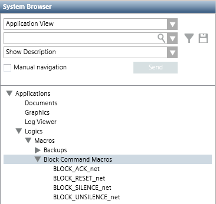

Block Command Macros
Block-command macros are macros that broadcast a fire alarm handling command--such as Acknowledge, Reset, and Silence/Unsilence--to all the devices on a given fire network at the same time.
Each block command macro is associated with a specific fire network, meaning the command in the macro will be sent to all the devices on that network. For example, BLOCK_ACK_net will send an Acknowledge command to all the devices on the network called net.
Block command macros are automatically created by the system when you enable them for a fire network. See Setting Up Block Command Macros.
When you enable block command macros for a fire network:
- The enabled block command macros are added to System Browser under the Block Command Macros folder.

The enable/disable block commands settings should be consistent across all the fire networks involved, for example BACnet (FS20) and XNET.
- When you send an alarm-handling command from Event List (for example, ACK), the corresponding block command macro is automatically invoked (for example BLOCK_ACK_net) to broadcast that command to the entire fire network.
The availability of commands in Event List depends on the event rights. If you do not have the right for a specific alarm-handling command for all the event categories that a fire panel can handle, its block command macro will be executed on all the panel event categories even if the relevant command is not available in Event List.
Furthermore, if you decide to configure only a subset of event categories handled by a fire panel, the block command execution will apply to all the event categories in any case, regardless of whether they were configured.
- When you send an alarm-handling command to an object from the Operation tab or Graphics Viewer tab, the block command macro may or may not be invoked. See the documentation of the specific fire network.
You can also create global block command macros, addressed to multiple fire networks. For example, you might want to send an Acknowledge command to all the devices on the networks net1 and net2. These need to be manually configured. See Setting Up Block Command Macros.
The name assigned to a global block command macro must exactly match one of the following:
- BLOCK_ACK, to create a global acknowledge macro.
- BLOCK_RESET, to create a global reset macro.
- BLOCK_SILENCE, to create a global silence macro.
- BLOCK_UNSILENCE, to create a global unsilence macro.
Location of Block Command Macros
Block Command macros are located under Macros > Block Command Macros subfolder. This contains any block command macros already created in the system.

Validation for Block Command Macros
If fire objects of a network configured for block commands are subject to validation, be aware of the following:
- For block commands to execute correctly, the block command macros must have the same (or a higher) validation profile as the target objects. Target objects are for example the FS20 Area-Block Commands and XNET Panels. Block command macros whose target objects have a higher validation profile than the macros will not execute.
- For full control of block command configuration at the fire network level, the block command macros must have the same (or a lower) validation profile as the fire network object. Disabling block commands (and thus deleting macros) will not be possible if a block command macro has a higher validation profile than the fire network object.